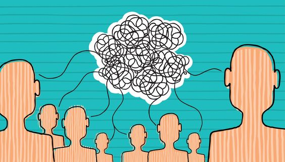

Comunicación efectiva
Es aquella que logra transmitir el mensaje de manera clara, precisa y comprensible para el receptor. Es decir, cuando el emisor del mensaje logra que el receptor entienda lo que se está comunicando sin confusiones, malentendidos o barreras en la comunicación, puede involucrar tanto la comunicación verbal (hablar y escuchar) como la comunicación no verbal (lenguaje corporal, tono de voz, etc.). Además, la comunicación efectiva también puede tener en cuenta el contexto y la situación en la que se está comunicando, así como las necesidades y características del receptor.
En otras paladras, el emisor y el receptor interpretan el mismo significado del comunicado.
¿Cómo podemos aplicar la comunicación efectiva?
Las personas suelen pensar que para tener una comunicación efectiva se requiere aprender y desarrollar ciertas habilidades eficaces que logren transformar nuestros espacios y tener una mayor influencia con nuestros equipos de trabajo, pero también es necesario tener la capacidad de escuchar y comprender del todo la información y datos que recibimos, recordemos, “entendernos para ser entendidos”.
Para una comunicación efectiva es necesario conocer la diferencia entre Comunicación Común y Comunicación efectiva:
Comunicación Común: a través de la cual las personas interactúan con su entorno, los objetivos que se pretenden llevar a cabo son: Crear un lenguaje común y familiar que pueda ser entendible para las personas.
Comunicación efectiva: La comunicación efectiva es aquella en la que el emisor y el receptor codifican un mensaje en forma equivalente. Así, el mensaje es transmitido de forma exitosa: el receptor comprende el significado y la intención del mensaje emitido. La comunicación en las empresas juega un papel bastante fundamental para su desarrollo y incremento, de igual manera se debería comprender que para que esta comunicación sea exitosa debería existir un liderazgo de parte del interlocutor y que las otras personas de la organización lo noten, a fin de que el proceso se vuelva dinámico y la colaboración en pro de comprender o hacer comprender un mensaje se convierta en una labor simple, con fluidez y agradable.

¿Cuáles son las características de la comunicación efectiva?
- completo que es el mensaje
- La claridad e integridad del mensaje
- Mensajes Concisos
- Consideración del entorno físico y receptor.
- La estructura del mensaje.
- El mensaje sin errores de gramática ni ortográficos.
- El mensaje es de importancia para el receptor
- Comprenda claramente los objetivos funcionales de estos elementos:
- El remitente es responsable de codificar el mensaje. Recibí la noticia.
- El destinatario es la persona que decodifica el mensaje. Recibe el mensaje.
- Los mensajes son información codificada en el idioma, ya sea verbal o no verbal.
- El código es una colección de símbolos y especificaciones de idiomas, controlados por dos agentes. Comunicación, emisor y receptor.
- El canal se utiliza para obtener la información que se ha codificado, se puede Formal e informal.
- El contexto es un elemento externo al lenguaje, es decir, que permite al receptor comunicarse.
- Tipos de comunicación efectiva
- Comunicación formal: se utiliza con todos los protocolos o normas profesionales.
- Comunicación informal: en esta comunicacion no hay protocolos; se utiliza para solo brindar un mensaje.
- Comunicación ascendente: esta se rige por la jerarquia del subalterno dirijiendose al superior.
- comunicación descendente: esta es la contra parte de la comunicación ascendente ya que esta comunicacion la realiza el superior a sus subalternos.
- Comunicación horizontal: a diferencia de las dos anteriores esta se da en tre personas del mismo nivel sea educativo laboral o social.
- Diferencia y relacionentre la comunicación efectiva y la comunicación asertiva

Principalmente, la diferencia radica en la forma de transmitir el mensaje, ya que la counicación efectiva se centra en la claridad del mensajea; a diferencia de la asertiva que se centra en el proceso de la comunicacion; especialmente en la forma corporal de los involucrados.
En la practica, una buena comunicacion con intercambio de informacion excelente: se tiene una regla que es inconsiente,la cual es que se utiliza la comunicacion efectiva con la asertiva, ya que un buen comunicador las usa de manera conjunta.